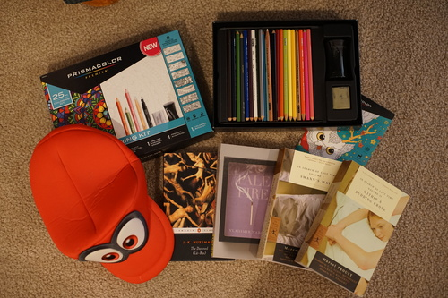

i hate to admit this after so much talking about not needing another doll after hina, but i bought another doll. it's a highly recasted one, so i'm a little freaked out about it, but everything about the listing looks real. i dont know how people buy secondhand dolls anymore. this is terrifying! it didnt used to be this way.
she's blank so I've been trying to design a faceup for her. i did one and it ended up looking like a clown... not quite the look i want for her. i'll keep trying.
hopefully she'll both show up and be legit. i am thankful for painless transactions... I'm really excited for her because i only have one doll right now that I'm willing to wipe and repaint! it's so fun to customize these dolls
i've been working on a halter top bodice for hina and i ran into a patterning error where i had to handsew and i kinda... didnt want to handsew so i didnt touch it for 2 weeks. I actually got my needle out and did it a couple days ago so maybe I'll make some progress again.
here are some "finds"!
All the colored pencils were included but not the fineliner. also 2 extra crayola pencils for some reason. the kneadable eraser is hard as a rock! exactly one page of the little book was colored (which will be recycled)
yes i did embarrass myself when the cashier almost missed this and i said "also a cappy too". uhhhh...
this is the only book that is mine. ryan already has like 5 copies of it. i'm also nowhere near ready to read such a thing! i'm sure ryan will let me know when i'm ready.
i'm not sure i know any of the songs on this album. maybe i only know songs off the previous album
now i'll give back ryan's black and white 2 pokedex. i really like to have these so i can draw pokemon out of them without having a computer on.
My collector's edition guides are starting to grow...
Will ryan ever execute his plan for these?
I humbly request Ryan get a job at the university of okinawa please.
what a beautiful tin case with macoto takahashi art. i'm just going to store my wooden pencils in it and stash the original pencils elsewhere. today was the day i learned macoto takahashi is a man.
my coworker asked me to look for hello kitty plushies for her so i can buy these with no guilt now.
is anyone here even old enough to remember when you had to text a number and pay $5 to get a ringtone? times have changed!